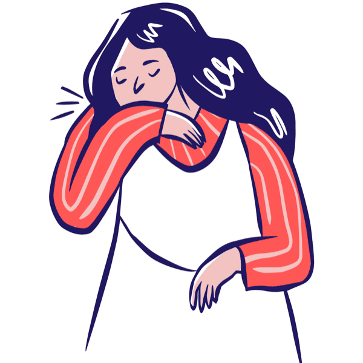
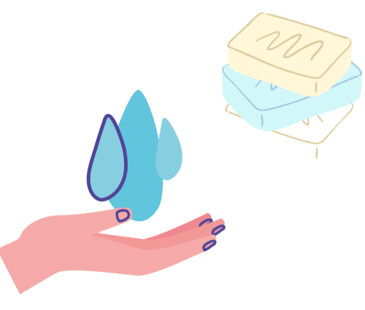
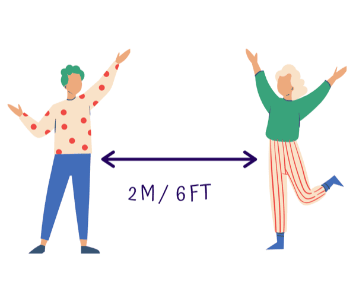
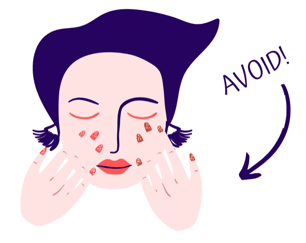
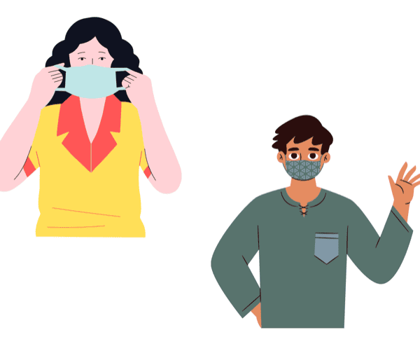
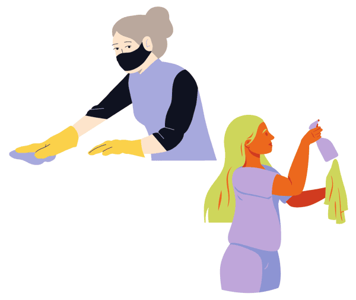
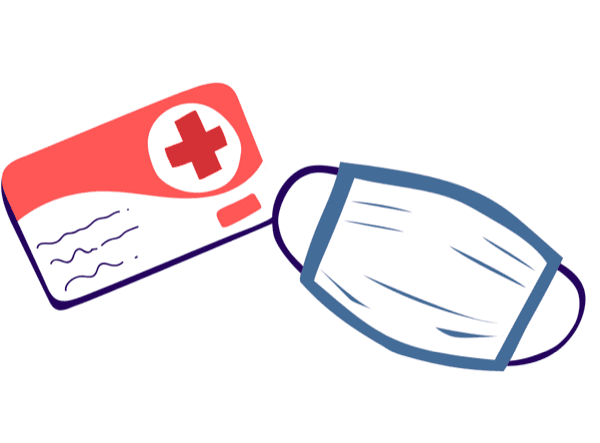

The COVID-19 pandemic is a serious global health threat. COVID-19 is caused by a coronavirus called SARS-CoV-2. Older adults and people who have severe underlying medical conditions like heart or lung disease or diabetes seem to be at higher risk for developing more serious complications from COVID-19 illness.
It was first identified in December 2019 in Wuhan, Hubei, China, and has resulted in an ongoing pandemic. The first confirmed case has been traced back to 17 November 2019 in Hubei.
Public health groups, including the U.S. Centers for Disease Control and Prevention (CDC) and WHO, are monitoring the pandemic and posting updates on their websites. These groups have also issued recommendations for preventing and treating the illness.
It was first identified in December 2019 in Wuhan, Hubei, China, and has resulted in an ongoing pandemic. The first confirmed case has been traced back to 17 November 2019 in Hubei.
Public health groups, including the U.S. Centers for Disease Control and Prevention (CDC) and WHO, are monitoring the pandemic and posting updates on their websites. These groups have also issued recommendations for preventing and treating the illness.
KNOW THE GLOBAL IMPACT
HOW DOES IT SPREAD?
- Between people who are in close contact with one another (within about 6 feet).
- Through respiratory droplets produced when an infected person coughs, sneezes, or talks.
- These droplets can land in the mouths or noses of people who are nearby or possibly be inhaled into the lungs.
- COVID-19 may be spread by people who are not showing symptoms.
KNOW THE COVID-19 SYMPTOMS
The following symptoms may appear 2-14 days after exposure:
Common signs and symptoms can include:
- Fever
- Cough
- Shortness of Breath
Other symptoms can include:
- Muscle aches
- Chills
- Sore throat
- Runny Nose
- Headache
- Chest pain
- Loss of taste or smell

Seek medical advice if:
- You develop worsening symptoms like:
- Trouble breathing
- Persistent chest pain or pressure
- Inability to stay awake
- New confusion
- Blue lips or face
- You have been in close contact with a person known to have COVID-19
- You live in or have recently been in an area with ongoing spread of COVID-19
STOP THE SPREAD
Wash your hands frequently
Regularly and thoroughly clean your hands with an alcohol-based hand rub or wash them with soap and water.

Maintain physical distancing
Maintain at least 2 meters (6 feet) distance between yourself and anyone who is coughing or sneezing.

Avoid touching eyes, nose and mouth
Hands touch many surfaces and can pick up viruses. Once contaminated, hands can transfer the virus to your eyes, nose or mouth.

Be a hero and wear a mask
Wear a mask while going out whether you are sick or not.

Sanitize your surroundings
Disinfect surfaces like doorknobs, tables, and desks regularly.

If you have a fever, cough and difficulty breathing, seek medical care early
Stay home if you feel unwell. If you have a fever, cough and difficulty breathing, seek medical attention and call in advance.

TESTED POSITIVE?
Isolate yourself
- As much as possible, stay in a specific room away from other people and use a separate bathroom if available.
- Limit contact with pets and other animals. If possible, have a member of your household care for them. If you must care for an animal, wear a face covering and wash your hands before and after you interact with them.
Stop isolation when:
- You've been fever-free for at least 24 hours without the use of fever-reducing medication AND
- Your symptoms have gotten better, AND
- At least 10 days have gone by since your symptoms first appeared.